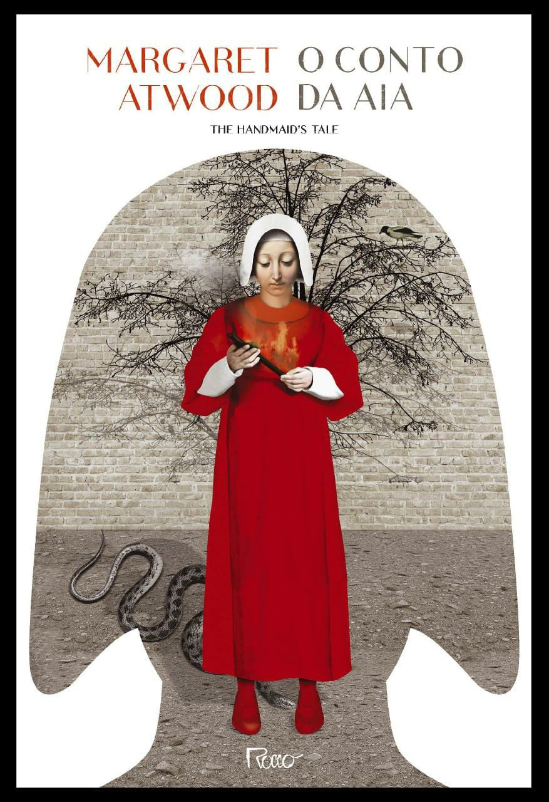

|  |
SINOPSE:
O romance distópico O conto da aia, de Margaret Atwood, se passa num futuro
muito próximo e tem como cenário uma república onde não existem mais jornais, revistas,
livros nem filmes. As universidades foram extintas. Também já não há advogados, porque
ninguém tem direito a defesa. Os cidadãos considerados criminosos são fuzilados e
pendurados mortos no Muro, em praça pública, para servir de exemplo enquanto seus corpos
apodrecem à vista de todos. Para merecer esse destino, não é preciso fazer muita coisa – basta,
por exemplo, cantar qualquer canção que contenha palavras proibidas pelo regime, como
“liberdade”. Nesse Estado teocrático e totalitário, as mulheres são as vítimas preferenciais,
anuladas por uma opressão sem precedentes.
As mulheres de Gilead não têm direitos. Elas são divididas em categorias, cada qual com uma
função muito específica no Estado. A Offred coube a categoria de aia, o que significa pertencer
ao governo e existir unicamente para procriar, depois que uma catástrofe nuclear tornou estéril
um grande número de pessoas. E sem dúvida, ainda que vigiada dia e noite e ceifada em seus direitos
mais básicos, o destino de uma aia ainda é melhor que o das não-mulheres, como são chamadas aquelas
que não podem ter filhos, as homossexuais, viúvas e feministas, condenadas a trabalhos forçados
nas colônias, lugares onde o nível de radiação é mortífero. Com esta história assustadora,
Margaret Atwood leva o leitor a refletir sobre liberdade, direitos civis, poder, a fragilidade
do mundo tal qual o conhecemos, o futuro e, principalmente, o presente. |